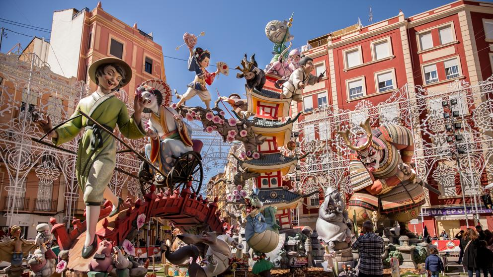

Valencia fue fundada por los romanos como colonia en el año 138 a. C., siendo cónsul Décimo Junio Bruto Galaico, y se denominó Valentia Edetanorum. Varios siglos después, en el año 711, los musulmanes ocuparon la ciudad aportando su lengua, religión y costumbres, como la implantación de sistemas de riego y la introducción de nuevos cultivos
menuLas Fallas de Valencia (Falles en valenciano) son unas fiestas que van del 15 (plantá) al 19 (Cremá) de marzo con una tradición arraigada en la ciudad española de Valencia y diferentes poblaciones de la Comunidad Valenciana.
La gastronomía valenciana es la que se prepara tradicionalmente en la Comunidad Valenciana. Se enmarca dentro de la dieta mediterránea debido al uso del aceite de oliva, las verduras y el pescado
La ciudad portuaria de Valencia se ubica en la costa sureste de España, donde el río Turia se une al mar Mediterráneo. Es famosa por la Ciudad de las Artes y las Ciencias, con estructuras futurísticas, como el planetario, el oceanario y un museo interactivo. Valencia también tiene varias playas, incluidas algunas dentro del cercano Parque de la Albufera, una reserva de humedales con un lago y senderos